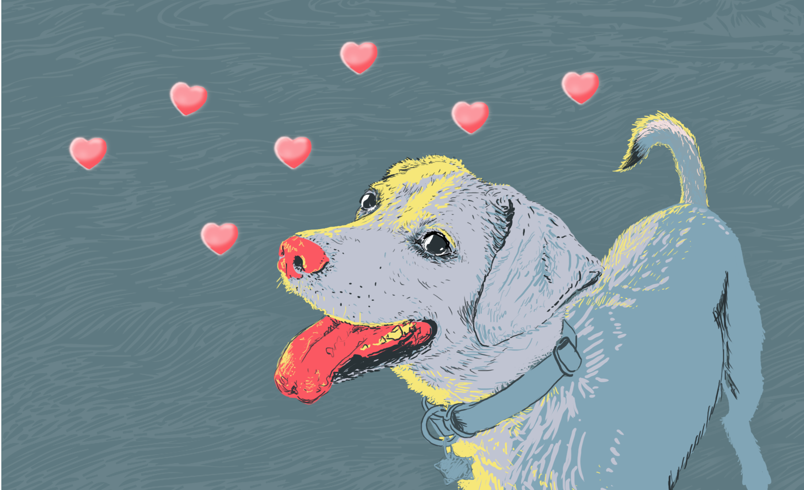

Fate and a lot of snow first brought Ben and Cola together. Assigned to the same cabin for a snowboarding meetup, these strangers discovered that they were Brooklyn neighbors.
December 2014
Fate and a lot of snow first brought Ben and Cola together. Assigned to the same cabin for a snowboarding meetup, these strangers discovered that they were Brooklyn neighbors.
Home again, Cola asked Ben out to dinner. They discovered similar tastes in music, and shared a yearning to someday see Bonobo live in concert.
One day, Cola soldered some pieces onto Ben’s quadcopter. That’s when he knew the search was over.
One night, Ben made Cola tikka masala from scratch for dinner. That’s when she knew he was the one.
April 2015
A big step: Ben asked Cola to move into his place. They spent an afternoon moving her stuff in from across the street.
Ben’s Mom and brother Tom visit, and Ben and Cola share the Brooklyn Botanic Garden with them.
On weekends they plan to hang out with friends Steve and Amy, but instead end up in the back yard with their kids, flying quadcopters.
November 2015
They take their first true vacation together – a two and a half week adventure to visit Cola's sister Pooja in Hong Kong, then on to tour Japan with Ben's friends.
Ben joins Cola's family in Boston for Christmas, and meets Cola's sister Salome for the first time.
They move into a bigger apartment, literally right next door, and paint the walls bright colors to make it feel like their home.

December 2016
A friend they had dog-sat for called saying they just couldn’t take care of their puppy anymore. Ben & Cola already loved this puppy and happily added Chihiro to their adventuring family.
December 2016
A friend they had dog-sat for called saying they just couldn’t take care of their puppy anymore. Ben & Cola already loved this puppy and happily added Chihiro to their adventuring family.
They’ve made that snowboarding meetup to Killington into an annual tradition! They fit in snowboarding trips most every winter weekend, as well as an annual trip to BC, Canada to ride Whistler Blackcomb.
They first bonded over wanting to see Bonobo live in concert, and they finally saw him play right in their adopted home of Brooklyn!
On a music streak, they visit Ben’s friends Paul and Krystle in DC to go to several concerts and festivals.
May 2017
Chihiro takes them hiking on Lake George, to a family cabin where Cola spent her childhood summers.
They reunite with Ben’s family in Chicago to witness Ben's cousin, Seth, marry his beautiful partner Melissa in a gorgeous ceremony.
On the weekends that they don’t go to Lake George, Chihiro takes them to Prospect Park in Brooklyn, where she can run free with hundreds of other dogs.
August 2017
Relaxing on a floating dock after a swim in Lake George, Ben surprises Cola by proposing. They had been talking about it long enough!
They take Chihiro to Prince Edward Island, Canada, for two and a half weeks with Cola's parents, their friend Casey, and her dog Coco.
So many friends but such busy schedules! Once a month, Cola and Ben host a homemade Pizza Night at their apartment to keep in touch with friends.
They’ve traveled to 3 Continents, 6 Countries, 7 Snowboarding Mountains, 13 States - and 2 Provinces, and 14 Cities since they started dating, and they’ve just barely gotten started.
Now
Whether it's a 15 hour flight to Japan, or a 15 minute walk to Prospect Park, Ben and Cola love to share amazing adventures. Now they’re excited to start their next adventure together, and they hope you can join them as they embark on their next journey.
Now
Whether it's a 15 hour flight to Japan, or a 15 minute walk to Prospect Park, Ben and Cola love to share amazing adventures. Now they’re excited to start their next adventure together, and they hope you can join them as they embark on their next journey.